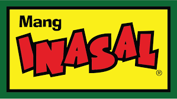

3 Best Restaurants to eat!
1. Jollibee

Jollibee is a Filipino chain of fast food restaurants owned by Jollibee Foods Corporation. As of December 2021, JFC had a total of about 1,500 Jollibee outlets worldwide, with restaurants in Southeast Asia, the Middle East, East Asia, North America, and Europe.
2. Mang Inasal
Mang Inasal Philippines, Inc., also known as Mang Inasal, is a barbecue fast food restaurant chain in the Philippines, established in Iloilo City in 2003.
3. McDonald
McDonald's Corporation is an American multinational fast food chain, founded in 1940 as a restaurant operated by Richard and Maurice McDonald, in San Bernardino, California, United States.